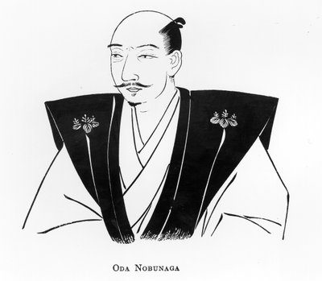

TENKA FUBU
He nearly unified Japan by burning everything that stood in his way — and as his own temple burned around him, he traded his soul for one more campaign, because unifiers don't stop, they just run out of world.

TENKA FUBU
He nearly unified Japan by burning everything that stood in his way — and as his own temple burned around him, he traded his soul for one more campaign, because unifiers don't stop, they just run out of world.
Feature map
Level-by-level features, as the figure refined them.
Nagashino's Thunder
Volley — Action · 2 CE · Claimed Ground — Bonus action · 1 CE.
Tier IV · Striker (zone) · suggested CE ability STR · Primary verb: Claim. Ground is not geography. Ground is a claim. Tenka Fubu makes the claim physical: claimed earth strengthens him, burns his enemies, and rejects the unclaimed. The realm under heaven — spread by force. Nagashino's Thunder (the volley — Action, 2 CE): spectral arquebusiers fire: make a ranged technique attack (+PB + STR to hit, range 80/240) dealing 2d10 piercing damage. (The future belongs to whoever brings the new weapon first.)
Claimed Ground (core mechanic — Bonus action, 1 CE): claim a 15-ft radius zone centered on a point within 60 ft for 1 minute. You may maintain up to PB active claims. While you stand in claimed ground, your weapon attacks deal additional damage equal to your PB. (The land knows its master.)
The Burning of Mount Hiei
Action · 4 CE.
Every enemy in your claimed ground must make a DEX save against your technique DC or take 3d8 fire damage (half on success). The mountain burned. The ground remembers how. (No save for the land. The land already decided.)
Three Lines of Gunners
Passive.
Your Nagashino's Thunder now fires three shots — make three attack rolls, which may target the same or different creatures. The CE cost becomes 3. (Rotating volleys. The Takeda cavalry learned.)
The Demon King's Banner
Passive.
Your claims are now 20-ft radius. Enemies in your claimed ground cannot hide from you or benefit from invisibility against you — the land reports to its master. Your damage bonus in claimed ground increases to PB + 2. (The banners fly. The realm is watched.)
Akechi's Lesson
Reaction · once per round · no CE cost.
When a creature you can see attacks you with advantage — flanking, unseen, treachery, the knife from behind — negate the advantage for that attack (it is made normally). (Betrayed once. Never twice.)
Demon King Ascendant
Passive.
While in your claimed ground: you have resistance to fire damage, your weapon attacks score critical hits on 19–20, and you may maintain up to PB + 2 active claims. (The Sixth Heaven is not a metaphor. It is an address.)
The Realm Is Mine
Passive.
Your claims are now 30-ft radius, up to PB + 2 active. Enemies treat your claimed ground as difficult terrain, and each enemy that starts its turn in your claimed ground takes fire damage equal to your PB — the land itself burns the unclaimed, no save, no warning. (There is only land I have claimed, and land I haven't claimed yet.)
Maximum, Domain, or equivalent.
Capstone material.
Honnō-ji: The Temple Burns Again
Every active claim erupts: each enemy in your claimed ground must make a DEX save or take 8d8 fire damage (half on success). All your claims' durations reset to 1 minute, and you may immediately establish new claims up to your maximum as part of this action. (The temple burned. The realm burns with it.)
Tenka Fubu: The Realm Under Heaven
The black-and-gold castle on the horizon. Azuchi, eternal. The sure-hit is No Land Beyond: when the domain is cast, every hostile inside must make a WIS save — on a failure, it cannot willingly leave the domain's radius for the duration (the realm has borders). The entire domain counts as your claimed ground — all Tenka Fubu benefits apply domain-wide — and your Nagashino's Thunder ignores cover inside it. (The realm under heaven. Spread by force. There is no outside.)
- Clash points
- 800
- Burnout
- 5 rounds
- Duration
- 2 minutes
- Radius
- 60-ft radius
- Activation ✦
- full-turn action
- CE cost ✦
- 20
✦ Canon: figure Domains are Specific Domains — the stated profile governs, not the player point-unlock table.
Fifty Years a Dream
When you drop to 0 hit points, you do not fall: you drop to 1 hit point instead, immediately resolve Honnō-ji: The Temple Burns Again at no CE cost (centered on yourself — your claims detonate with you at their heart), and for 1 minute your weapon attacks deal +2d8 fire damage. (Ningen gojūnen — human life is but fifty years. He spent his the way fire spends fuel: all at once, and beautifully.)
Build-defining options.
Historical-figure techniques grant no feats — the figure's art is complete as written, and the builder's feat picker excludes these techniques. Take the progression as the build.
Edge cases and shared systems.
Campaign canon notes